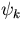

1. Kantorovich L.N. An embedded-molecular-cluster method in the studies of defects electronic structure in wide-gap insulators. - Zh.Fiz.Khim., v.61, 1987, p.3137-3150 (in Russian).
2. Zhidomirov G.M., Shluger A.L., Kantorovich L.N. Modern models in the chemisorption theory. - In: Modern problems in quantum chemistry, Leningrad, Nauka Publ., 1987, p.224-281 (in Russian).
3. Zakis Ju., Kantorovich L.N., Kotomin E.A., Kuzovkov V.N., Tale I., Shluger A.L. Models of processes in wide gap solids with defects. - Riga, Zinatne Publ., 1991, 320 p. (in Russian).
4. M. J. Gillan, L. N. Kantorovich and P. J. D. Lindan, Modelling of oxide surfaces. - Current Opinion In Solid State and Materials Science, 1996, Vol.1, No.6, pp.820-826
5. M. J. Gillan, P. J. D. Lindan, L. N. Kantorovich and S. P. Bates, Molecular processes on oxide surfaces studied by first- principles calculations. - Mineralogical Magazine, 1998, v. 62, No.5, pp. 669-685.
6. L. N. Kantorovich, A. L. Shluger and M. J. Gillan, What can we learn about perfect and defective MgO (001) surface using density functional theory? - In: Defects and Surface-Induced Effects in Advanced Perovskites, G. Borstel et al. (Eds.), Kluwer Academic Publishers, Netherlands, 2000, pp. 49-60. (this is a talk presented on the "NATO Advanced Research Workshop", Jurmala, 1999).
7. L. Kantorovich, M. Gauthier and M. Tsukada,
Theory of energy dissipation into surface vibrations, - Chapter
19 in Noncontact atomic force microscopy, Springer series
"Nanoscience and Technology", Eds. S. Morita, R. Wiesendanger and E. Meyer,
2002.
1. Egorova T.V., Kantorovich L.N., Livshitz A.I., Shluger A.L. Adsorption of water molecules on alkali halide crystals surfaces.- Zh.Fiz.Khim.,v.55, 1981, p.1350-1351 (in Russian).
2. Kantorovich L.N., Shluger A.L. Adsorption of a water molecule on alkali halide crystals surfaces. - Khim.Fiz., v.1, 1982, p.1341-1348 (in Russian).
3. Shluger A.L., Kotomin E.A. and Kantorovich L.N. Calculations of energies of radiative tunneling transitions between defects in alkali halides. - Solid State Comm., v.42, 1982, p.749-752.
4. Kantorovich L.N. Multipole theory of the polarization of solids by point defect. I.Dipole approximation. - Phys.stat.sol.(b), v.120, 1983, p.77-86.
5. Kantorovich L.N., Shluger A.L. Defect induced crystal polarization effects in potential surfaces calculations of thermoactivated processes.- In: Thermoactivated spectroscopy of defects in ionic crystals, Riga, Latv.State Univ. Press, 1983, p.23-38 (in Russian).
6. Kantorovich L.N. Multipole theory of the polarization of solids by point defect. II.The point charge approximation. - Phys.stat.sol.(b) v.123, 1984, p.325-334.
7. Gotlib V.I., Kantorovich L.N., Grebenshicov V.L., Bichev V.R. and Nemiro E.A. The study of thermoluminescence using the contact method of sample heating. - J.Phys.D:Appl.Phys., v.17, 1984, p.2097-2114.
8. Kantorovich L.N., Shluger A.L., Tiliks Y.E. Interaction of adsorbed water molecules with an alkali halide surface.- Khim.Fiz., v.3, 1984, p.894-899 (in Russian).
9. Shluger A.L., Kantorovich L.N., Kotomin E.A., Dzelme Y.R. Influence of an alkali halide crystal surface on defects electronic structure and their interaction with each other and with water.- Zh.Fiz.Khim., v.59, 1985, p.1224-1227 (in Russian).
10. Kantorovich L.N., Kotomin E.A., Shluger A.L. Quantum-chemical simulation for determination of electronic and spatial structure of defects in wide-gap solids. - In: Electronic processes and defects in ionic crystals, 1985, Riga, Latv. State Univ.Press, p.146- 166 (in Russian).
11. Kantorovich L.N. Multipole theory of the polarization of solids by point defect. III.Transition energy calculations, the approximation of non - point charges. - Phys.stat.sol.(b), v.137, 1986, p.229-240.
12. Shluger A.L., Kotomin E.A. and Kantorovich L.N. Quantum-chemical simulation of impurity-induced trapping of a hole: [Li]0 centre in MgO. - J.Phys.C:Solid State Phys., v.19, 1986, p.4183-4199.
13. Gotlib V.I., Grebenchicov V.L., Zahre P., Kantorovich L.N., Nemiro E.A. Thermoluminescence dosimetry of beta radiation. - In: Luminescence detectors and converters of ionising radiation, 1987, Tartu, Est.SSR, p.20-29 (in Russian).
14. Kantorovich L.N. Excitonic representation for investigation of electronic polarization in insulating crystals.- Izv.Acad.Nauk Latv.SSR, No.5, 1987, p.18-24 (in Russian).
15. Kantorovich L.N. Multipole theory of the polarization of solids by point defect. IV.Electronic and spatial structure of single electronic and hole centers and their pairs in LiF, KCl crystals. - Phys.stat.sol.(b), v. 144, 1987, p.719-726.
16. L.N.Kantorovich, G.M.Fogel, V.I.Gotlib. A theoretical description of complex thermoluminescence curves.- J.Phys.D:Appl.Phys., v.21, 1988, p.1008-1014.
17. Gotlib V.I., Grebenchicov V.L., Kantorovich L.N. and Sahre P. Thermoluminescence of beta radiation. - Rad.Prot.Dos., v.22, 1988, p.13-17.
18. Kantorovich L.N. An embedded-molecular-cluster method for calculating the electronic structure of point defects in non-metallic crystals: I.General theory. - J.Phys.C:Solid State Phys. v.21, 1988, p.5041-5056.
19. Kantorovich L.N. An embedded-molecular-cluster method for calculating the electronic structure of point defects in non - metallic crystals: II.Structure elements in the form of molecules - J.Phys.C:Solid State Phys., v.21, 1988, p.5057-5073.
20. Gotlib V.I., Grebenchicov V.L., Kantorovich L.N. Thermoluminescence dosimetry of beta radiation. - Rad.Prot.Dos., v.25, 1988, p.67-68.
21. Kantorovich L.N. Calculations of optical properties of glasses in the molecular cluster model accounting for a continuous disordering.- In: Spectroscopy of glasses, Riga, 1988, Latv.State Univ.Press, p.12-20 (in Russian).
22. L.N.Kantorovich, G.M.Fogel - A theoretical description of complex thermoluminescence curves.II.Method of integral equation.- J.Phys.D: Appl.Phys., v.22, 1989, p.817-824.
23. L.N.Kantorovich, G.M.Fogel, V.I.Gotlib. An integral equation method for discrete and continuous distribution of centres in thermoluminescence kinetics.- J.Phys.D: Appl. Phys., v.23, 1990, p.1219-1226.
24. Gotlib V.I., Grebenchicov V.L., Kantorovich L.N. and Nemiro E.A. Thermoluminescence dosimetry of beta radiation on the basis of several TL detectors of usual thickness. - Rad.Prot.Dos., v.34, 1990, p.131-134.
25. C.Pisani, R.Dovesi, R.Nada and L.N.Kantorovich. Ab initio Hartree - Fock pertubed-cluster treatment of local defects in crystals. - J.Chem. Phys., v.92, 1990, p.7448-7460.
26. Kantorovich L.N. and Zapol B.P. A diagram technique for non- orthogonal electron group functions. I.Right coset decomposition of symmetric group.- J.Chem.Phys., v.96, No 11, 1992, p.8420-8426.
27. Kantorovich L.N. and Zapol B.P. A diagram technique for non- orthogonal electron group functions. II.Reduced density matrices and total energy. - J.Chem.Phys., v.96, No 11, 1992 p.8427-8438.
28. Kantorovich L.N. Method of functional derivatives in the theory of point defects in crystals. I.General theory: representations of the self-energy. - Phys.stat.sol.(b), v.171, 1992, p.113-129.
29. Kantorovich L.N. Method of functional derivatives in the theory of point defects in crystals. II.General theory: Total energy, electronic density and density of states. - Phys.stat.sol.(b), v.171, 1992, p.447- 458.
30. Shluger A.L., Kantorovich L.N., Heifets E.N., Shidlovskaya E.K. and Grimes R.W. Theoretical simulation of Vk-centre migration in KCl: I. A quantum-chemical study. - J.Phys. Condens. Matter, v.4, 1992, p.7417 - 7428.
31. E.A.Kotomin, L.N.Kantorovich, I.A.Tale and V.G.Tale. Theoretical simulation of Vk-centre migration in KCl: II.Phenomenological theory.- J.Phys. Condens. Matter, v.4, 1992, p.7429 - 7440.
32. Kantorovich L.N. and Livshitz A.I. A Novel Approach for Constructing Symmetry-Adapted Basis Sets for Quantum-Chemical Calculations. I.Real symmetry-adapted orbitals - Phys. stat.sol.(b), v.174, 1992, p.79-90.
33. Kantorovich L., Heifets E., Livshitz A., Kuklja M. and Zapol P. Theoretical analysis of hole self-trapping in ionic solids. Application to the KCl crystal. - Phys. Rev. B, v.47, No.22, 1993, p.14875-14885.
33a. B. P. Zapol and L. N. Kantorovich. An operator technique for calculations using nonorthogonal electron group functions. - Latv. J. Phys. and Techn. Sciences, N.5, 1993, p. 18 -22.
34. Kantorovich L.N., Livshitz A.I. and Fogel G.M. Thermoluminescence kinetic in the case of a continuous distribution of trap centers over their activation energies. - J.Phys. Condens. Matter, v.5, 1994, p.7503-7514.
35. Kantorovich L.N. and Zapol P.B. Theoretical investigation of the self- trapped hole in alkali halides. I.Long-range effects within the model hamiltonian approach. - Phys.Stat.Sol.(b), v.183, 1994, p.201-221.
36. Kantorovich L., Stashans A., Kotomin E. and Jacobs P.W.M. Quantum chemical simulations of hole self-trapping in semi-ionic crystals. - Int.J.Quant.Chem., v.52, 1994, p.1177-1198.
37. A.Martin Pendas, V.Luana, J.M.Recio, M.Florez, E.Francisco, M.A.Blanco and L.Kantorovich. Pressure induced B1-B2 phase transition in alkali halides: General aspects from first principles calculations. - Phys. Rev. B, v.49, No.5, 1994, 3066-3074.
38. L.N.Kantorovich, Thermoelastic properties of perfect crystals with nonprimitive lattices. I. General theory. - Phys. Rev. B, v.51, 1995, p.3520-3534.
39. L.N.Kantorovich, Thermoelastic properties of perfect crystals with nonprimitive lattices. II. Application to KCl and NaCl. - Phys. Rev. B, v.51, 1995, p.3535-3548.
40. Kotomin E., Stashans A., Kantorovich L., Lifshitz A., Popov A., Tale I. and Calais J.-L., Calculations of the geometry and optical properties of FMg centers and dimer (F2-type) centers in corundum crystals. - Phys. Rev. B, v.51, 1995, p.8770-8778.
41. I.Manassidis, J.Goniakowski, L. Kantorovich and M.J.Gillan, The structure of the stoichiometric and reduced SnO2 (110) surface. - Surface Science, v.339, 1995, p. 258 - 271.
42. L.Kantorovich, J.Holender and M.J.Gillan, The energetics and electronic structure of defective and irregular surfaces on MgO. - Surface Science, v.343, 1995, p. 221 - 239.
43. L.Kantorovich and A.Shluger, Calculation of the polarization of semi-infinite crystal far away from point defect. - Phys. Rev. B, v. 53, 1996, p. 136 - 147.
44. J. Goniakowski, J. M. Holender, L. N. Kantorovich, M. J. Gillan and J. A. White, Influence of gradient corrections on the bulk and surface properties if TiO2 and SnO2. - Phys. Rev. B, v. 53, 1995, p. 957 - 960.
45. L.Kantorovich, M.J.Gillan and J. A. White, Adsorption of atomic oxygen on the MgO (001) surface. - J. Chem. Soc. Farad. Trans., v. 92, No. 12, 1996, p. 2075 - 2080.
46. P.B.Zapol and L.N.Kantorovich. Theoretical Investigation of Self-Trapped Hole in Alkali Halides. Long-Range Effects Within the Model Hamiltonian Approach. In: Prospectives of Polarons. Eds: G.N.Chuev and V.D.Lakhno. World Scientific (Singapore, New Jersey, London, Hong Kong), 1996, p: 38-62.
47. D. Ochs, W. Maus-Friedrichs, M. Brause, J. Günster, V. Kempter, V. Puchin, A. Shluger and L. Kantorovich, Study of the surface electronic structure of MgO bulk crystals and thin films. - Surface Science, v. 365, 1996, pp. 557 - 571.
48. L.Kantorovich and M.J.Gillan, Adsorption of atomic and molecular oxygen on the MgO and CaO (001) surface. - Materials Science Forum, Vols. 239 - 241, 1997, pp. 637 - 640.
49. L.Kantorovich and M.J.Gillan , Adsorption of atomic and molecular oxygen on the MgO (001) surface. - Surface Science, v. 374, 1997, pp. 373 - 386.
50. L.Kantorovich and M.J.Gillan , The energetics of N2O dissociation on CaO (001). - Surface Science, v. 376, 1997, pp. 169 - 176.
51. A. L. Shluger, L. N. Kantorovich, A. I. Livshits and M. J. Gillan, Ionic and electronic processes at ionic surfaces induced by Atomic Force Microscope tips. - Phys. Rev. B, v. 56, 1997, pp. 15332- 15344.
52. M. B. Taylor, G. D. Barrera, N. L. Allan, T. H. K. Barron, L. N. Kantorovich and W. C. Mackrodt, Polar solids at elevated temperatures and high pressures: MgF2. - J. Chem. Phys., v. 107, 1997, pp. 4337-4344.
53. A. L. Shluger, P. V. Sushko and L. N. Kantorovich, Spectroscopy of low-coordinated surface sites: theoretical study of MgO. - Phys. Rev. B, v. 59, 1999, pp. 2417-2430 .
54. P. V. Sushko, A. S. Foster, L. N. Kantorovich and A. L. Shluger, Investigating the effects of silicon tip contamnination in non-contact SFM. - Appl. Surf. Science, v. 144-145, 1998, pp. 608-612.
55. L. N. Kantorovich, I. I. Tupitsyn, Coulomb potential inside a large finite crystal. - J. Phys.: Condens. Matter, v. 11, 1999, pp. 6159-6168.
56. L. N. Kantorovich, A. L. Shluger, P. V. Sushko, J. Günster, P. Stracke, D.W. Goodman and V. Kempter, Mg Clusters on MgO surfaces: study of the nucleation mechanism with MIES and ab initio calculations. - Farad. Disc., v. 114, 1999, pp. 173-194.
57. L. Kantorovich, Application of the group function theory to infinite systems. - Int. J. Quant. Chem., v. 76, 2000, pp. 511-534.
58. L. Kantorovich, A. Shluger, J. Günster, J. Stultz, S. Krischok, D. W. Goodman, P. Stracke, V. Kempter, Mg Clusters on MgO surfaces: Characterization by MIES and Electronic Structure ab initio Calculations. - Nucl. Instr. Methods B, v. 157, 1999, pp. 162-166.
59. L. N. Kantorovich, Elimination of the long-range dipole interaction in calculations with Periodic Boundary Conditions. - Phys. Rev. B, v. 60, No. 23, 1999, pp. 15476-15479.
60. L. N. Kantorovich, A. L. Shluger, P. V. Sushko and A. M. Stoneham, The prediction of metastable impact electronic spectra (MIES): perfect and defective MgO (001) surfaces by state-of-the-art methods - Surf. Science, v. 444, 2000, pp. 31-51.
61. L. N. Kantorovich, A.I. Livshits and M. Stoneham, Electrostatic energy calculation for the interpretation of Surface Probe Microscopy experiments. - J. Phys.: Condens. Matter, v. 12, 2000, pp. 795-814.
62. L. N. Kantorovich, A. S. Foster, A. L. Shluger and A. M. Stoneham, Role of image forces in NC-SFM images of ionic surfaces. - Surf. Science, v. 445, 2000, pp. 283-299.
63. L. N. Kantorovich, Derivation of Atomistic Models for Lattices Consisting of Weakly Overlapping Structural Elements. - Int. J. Quant. Chem., v. 78, 2000, pp. 306-330.
64. L. N. Kantorovich, Derivation of a hybrid scheme for cluster embedding. - J. Mol. Graphics & Modeling, v. 16, No.4-6, 1998, pp. 272-273
65. R. Bennewitz, A. S. Foster, L. N. Kantorovich, M. Bammerlin, Ch. Loppacher, S. Schar, M. Guggisberg, E. Meyer and A. L. Shluger, Atomically resolved edges and kinks of NaCl islands on Cu(111): experiment and theory. - Phys. Rev. B, v. 62, No. 3, 2000, pp. 2074-2084.
66. L. Kantorovich , General Discussion - Faraday Discussions, v . 114, 1999, pp. 235-238.
67. A. S. Foster, L. Kantorovich and A. Shluger, Tip and surface properties from the distance dependence of tip-surface interaction. - Appl. Phys. A , v. 72, 2001, pp. S59-S62.
68. L. Kantorovich, A. L. Shluger and A. M. Stoneham, Structure and Spectroscopy of Surface Defects from Scanning Force Microscopy: Theoretical Predictions. - Phys. Rev. Lett., v. 85, 2000, pp. 3846 -3849.
69. L. Kantorovich, A. L. Shluger and A. M. Stoneham, Recognition of Surface Species in Atomic Force Microscopy: Optical properties of Cr3+ defect at the MgO (001) surface. - Phys. Rev. B, 2001, v. 63, pp. 184111-184123.
70. L. Kantorovich, A simple nonequilibrium theory of non-contact dissipation force microscopy. - J. Phys. Condens. Matter, v. 13, No. 5, 2001, pp. 945-958.
71. L. Kantorovich, Stochastic friction force mechanism of energy dissipation in noncontact atomic force microscopy. - Phys. Rev. B, 2001, v. 64, p. 245409 (13 pages).
72. M. Y. Mo and L. Kantorovich, Application of the non-equilibrium statistical operator method (NESOM) to dissipation atomic force microscopy. - J. Phys. Condens. Matter, v. 13, No. 7, 2001, pp. 1439-1459.
73. L N Kantorovich, Energy dissipation above plane terraces of a model crystal in non-contact atomic force microscopy. - J. Phys.: Condens. Matter, v. 14, No 17, 2002, pp. 4329-4343.
74. L N Kantorovich, Non-equilibrium dynamics of a classical tip interacting with a quantum surface. - J. Phys.: Condens. Matter, v. 14, No. 30, 2002, pp. 7123-7133.
75. L N Kantorovich, Nonequilibrium statistical mechanics of mixed quantum classical ensembles: application to noncontact atomic force microscopy . - Phys. Rev. Letters, v. 89, No. 9, 2002, No. 096105.
76. L N Kantorovich, Nonequilibrium statistical mechanics of mixed quantum classical ensembles: application to noncontact atomic force microscopy . - Virtual Journal of Nanoscale Science & Technology, v. 6, issue 9.
77. Bennewitz R, Pfeiffer O, Schar S, Barwich V, Meyer E, Kantorovich LN, Atomic corrugation in nc-AFM of alkali halides. - Appl. Surface Science, v. 188 (3-4), pp.232-237 (2002).
78. L N Kantorovich, Quantum theory of energy dissipation in non-contact atomic force microscopy in Markovian approximation, - Surface Science, v. 521, Issue 3, pp. 117-128 (2002).
79. L. N. Kantorovich, Exact calculation of the tip friction within the harmonic model, - Appl. Surface Science, v. 210 (1-2), pp. 27-31 (2003).
1. Gotlib V.I., Grebenshikov V.L., Kantorovich L.N., Nemiro E.A. TL-dosimetry method for beta radiation.- Proc.YI Sov. symp. on luminescence detectors and converters of ionizing radiation. Lvov, August, 1988, p.66 (in Russian).
2. Kantorovich L.N., Fogel G.M., Calculation of the peak area in the complex thermoluminescence curve. - Proc. VI Sov. symp. on lumin. detectors and converters of ionizing rad., Lvov, 1988, p.96 (in Russian).
3. Kantorovich L.N., Fogel G.M., Gotlib V.I. Thermoluminescence kinetics.-Proc. YI Sov. symp. on luminescene detectors and converters of ionizing radiation. Lvov, August, 1988, p.71 (in Russian).
4. Puchin V.E., Kantorovich L.N., Zapol B.P. Computer code for the ab- initio calculations of electronic structure of defects in ionic crystals.- Proc. Conf. on computer simul. of defects structure in crystals. Leningrad, 1988, p.124 (in Russian).
5. Gotlib V.I., Grebenshikov V.L., Kantorovich L.N., Nemiro E.A. Thermoluminescence dosimetry of beta-radiation. - Proc. 9-th Int. Conf. on solid state dosimetry. Austrian research centre Seibersdorf, 1989, Vienna, p.6.18.
6. Kantorovich L.N., Zapol B.P. Diagrammatic techniques for non-orthogonal geminals in the theory of semiconductors. Donetsk, Oct. 1989, Don. Techn. Inst., p.61 (in Russian).
7. Gotlib V.I., Fogel G.M., Kantorovich L.N. Termoluminescence kinetics. - Proc. VII Sov. conf. on rad. phys. and chem. of inorganic materials. Riga, 1989, Phys. Inst. Acad. of Scien., Latv.SSR, p. 546 (in Russian).
8. Kantorovich L.N. The functional derivatives method in the defects theory. - Proc. III Sov. conf. on quantum chem. of solids. Riga, Nov. 1990, Latv. Univ., p.196-197.
9. Kantorovich L.N. The embedded-molecular-cluster method taking into account the effects of non-orthogonality.- Proc. III Sov. conf. on quantum chem. of solids. Riga, 1990, Latv.Univ., p.198- 199.
10. Kantorovich L.N., Zapol B.P. The diagram techniques for the non- orthogonal group functions.- Proc. III Sov. conf. on quantum chem. of solids. Riga, 1990, Latv. Univ., p.200-201.
11. Kantorovich L., Livshitz A. Rigorous TL kinetic in the case of a continuous distribution of trap centers over their activation energies. - Proc. Intern. Symp. on luminescent detectors and transformers of ionizing radiation, Riga, Latvia, October 9-12, 1991.
12. Kantorovich L. Physically correct embedding of a molecular cluster into a crystal environment. - Abstracts of the International Conference on Defects in Insulating Materials, p.85, Schlob Nordkirchen, FRG, August 16th-22nd, 1992.
13. Heifets E.,Kantorovich L. and Kuklja M. Calculation of the Hole Self- Trapped Energy. - Abstracts of the International Conference on Defects in Insulating Materials, p.86, Schlob Nordkirchen, FRG, August 16th - 22nd, 1992.
14. Kantorovich L., Livshitz A., Gotlib V. General integral equation method for studying the TL kinetic of disordered solids. - In the Proceedings of 10th Intern. Conf. on Solid State Dosimetry, No. G43.P4, p.32, Washington, 1992.
15. A.Martin Pendas, V.Luana, J.M.Recio, M.Florez, E.Francisco, L.Kantorovich and M.A.Blanco. The B1-B2 phase transition in alkali halides: thermodynamic and kinetic aspects from first principles calculations. - In: 1st Intern. Congress of the Theor. Soc. of Chem. Phys., Gerona, 28 June - 3 July, 1993.
16. L. Kantorovich, Thermoelastic and dielectric properties of KCl and NaCl crystals in the quasiharmonic approximation: fuly automatic approach. - Presented at the Conference ``How to derive the interatomic potentials needed for simulation studies'', Mansfield College, Oxford, July 4-5, 1994.
17. L. Kantorovich, J. Holender and M.J. Gillan, F-centers on the MgO (001) surface. - In: Book of Abstracts of the 7th International Workshop on Computational Condensed Matter Physics: Total energy and Force Methods (Trieste, Italy, 11-15 Jan. 1995), p.131.
18. L. Kantorovich, J. Holender and M.J. Gillan, The irregular and defective MgO (001) surface. - Presented at the meeting ``The structure and properties of oxide surfaces'', Daresbury Laboratory, April 5-6, 1995.
19. L. Kantorovich, J. Holender and M.J. Gillan, F-centers on the MgO (001) surface. - Presented at The 1995 March Meeting of the American Physical Society, San Jose, USA, 20 - 24 March 1995.
20. L. Kantorovich, J. Holender and M.J. Gillan, F-centers on the MgO (001) surface studied by ab initio calculations. - Presented at the Christmas Meeting of Polar Solids Group of Royal Society of Chemistry, St. Andrews, Scotland, 19-20 Dec. 1994.
21. L. Kantorovich, Quantum cluster in polarisable crystal environment. Consistent microscopical approach. - Presented at the CCP1/CCP5 Workshop on Modelling of Localised States in Condensed Matter, Keele, Keele University, Staffordshire, 14 - 16 June 1995.
22. L. N. Kantorovich and M. J. Gillan, Adsorption of an oxygen atom on the MgO (001) surface studied by ab initio calculations. - Presented at the CCP5 Annual Meeting entitled Advanced Computer Simulation of Materials, 20 - 22 September 1995, Daresbury.
23. L. N. Kantorovich, M. J. Gillan and J. A. White, Adsorption of atomic and molecular oxygen on the MgO (001) surface. - Presented at the ISSC 11 Meeting in Fitzwilliam College, Cambridge, 15th-18th April 1996, p. T.02.
24. L. N. Kantorovich and M. J. Gillan, Adsorption of atomic and molecular oxygen on the MgO and CaO (001) surface. -

Network Conference, Schwäbisch Gmünd, September 1996, Germany, Program and Abstracts, p. 66.25. L. N. Kantorovich and M. J. Gillan, Adsorption of atomic and molecular oxygen on the MgO (100) surface. - 13th International Conference on Defects in Insulating Materials (ICDIM 96), Wake Forest University, U.S.A., July 1996, Abstracts, p. 45.
26. A. I. Livshits, A. L. Shluger and L. N. Kantorovich, How to observe point defects at ionic surfaces using scanning force microscopy? - Program and Abstracts, 8th Europhysical Conference on Defects in Insulating Materials (EURODIM98), Keele University, U.K., July 1998, p. 163.
27. A. L. Shluger, P. V. Sushko and L. N. Kantorovich, Spectroscopy of low-coordinated surface sites: theoretical study of MgO. - EURODIM98 Program and Abstracts, 8th Europhysical Conference on Defects in Insulating Materials, Keele University, U.K., July 1998, p. 162.
28. L. N. Kantorovich, Derivation of a hybrid scheme for cluster embedding. - EURODIM98 Program and Abstracts, 8th Europhysical Conference on Defects in Insulating Materials, Keele University, U.K., July 1998, p. 177.
29. L. N. Kantorovich, Derivation of a hybrid scheme for cluster embedding. - MM/QM Methods and Applications, Univ. of Southampton, 14-16 April, 1999.
30. L. N. Kantorovich, Application of the Group Function Theory in the Theory of Crystals. - Quantum Systems in Chemistry and Physics, INJEP, Marly-Le-Roi, France, 22-27 April 1999.
31. L.N. Kantorovich, A. L. Shluger and M. J. Gillan, Defects and metal clusters at oxide surfaces: theory and comparision with UPS and MIES. - NATO Advanced Research Workshop, Jurmala, Latvia, August 23-25, 1999
32. L. N. Kantorovich, A. L. Shluger, P. V. Sushko, J. Günster, P. Stracke, D.W. Goodman and V. Kempter, Mg Clusters on MgO surfaces: Study of the nucleation mechanism with MIES and ab initio calculations. - Farad. Discussions, Ambleside, U. K., Sepetember 1-3, 1999
33. A. S. Foster, L. N. Kantorovich, A. L. Shluger, A. I. Livshits, Non-contact atomic force microscopy theoretical imaging of islands on the NaCl(001) surface. - Indisciplinary Surface Science Conference 12 at Chester College, 31.03.99.
34. A. S. Foster, L. N. Kantorovich, A. L. Shluger, A. I. Livshits, Non-contact atomic force microscopy theoretical imaging of islands on the NaCl(001) surface. - UK Scanning Probe Microscopy 99 at Surrey University, 20.04.99.
35. A. L. Shluger, P. Sushko and L. Kantorovich, Spectroscopy of low-coordinated surface sites: Theoretical study og MgO. - Worshop on Surface and Interface optics' 99 (SIO'99), Sainte-Maxime (France), 4-9 May, 1999 (# P.67).
36. A. S. Foster, A. L. Shluger, L. N. Kantorovich, A. I. Livshits, Theoretical Modelling of Non-contact Atomic Force Microscopy. - European Materials Research Society Spring Meeting in Strasbourg, 3.06.99.
37. A. S. Foster, A. L. Shluger, L. N. Kantorovich, A. I. Livshits, Modelling Image Forces in Non-contact Atomic Force Microscopy. - European Materials Research Society Spring Meeting in Strasbourg, 4.06.99.
38. A. S. Foster, L. N. Kantorovich, A. L. Shluger, A. I. Livshits, Role of Image Forces in Non-contact Atomic Force Microscopy. - Non-contact Atomic Force Microscopy 99 in Pontresina, 2.09.99.
39. ???
40. L. Kantorovich and M. Mo, Theoretical analysis of the physical origin of energy dissipation in Atomic Force Microscopy. - 11th International Conference on Scanning Tunneling Microscopy/Spectroscopy and Related Techniques. Technical Program & Abstracts, Univ. of British Columbia, Vancouver, Canada, July 15-20, 2001, page 211 (oral presentation)
41. L, Kantorovich, A. Shluger and A. Stoneham, Recognition of surface species in Atomic Force Microscopy: optical properties of Cr3+ defect at the MgO (001) surface. - 11th International Conference on Scanning Tunneling Microscopy/Spectroscopy and Related Techniques. Technical Program & Abstracts, Univ. of British Columbia, Vancouver, Canada, July 15-20, 2001, page 431 (poster)
42. L. Kantorovich, Physical origin of energy dissipation in Atomic Force Microscopy and sample calculations in a simple model. - NC-AFM 2001, 4th International Conference on Noncontact Atomic Force Microscopy, Kyoto, Japan, Sept. 1-5, 2001, page 15 (oral presentation).
43. L. Kantorovich, Quantum friction in Non-Contact AFM. - CMMP 2002 - Condensed Matter and Material Physics, 1-77 April 2002, Brighton, Europhysics Conference Abstracts, vol. 26A, page 20 (oral presentation).
44. L. Kantorovich, Non-equilibrium quantum dynamics of NC-AFM. - 5th International Conference on Noncontact Atomic Force Microscopy, 11-14 August 2002, Montreal, Canada, page 37 (poster).
45. L. Kantorovich, Dissipation mechanisms in AFM: approach based on nonequilibrium statistical mechanics. - 1st ESF Nanotribology Workshop in Portovenere, Italy, 19-23 October 2002, page 34 (oral presentation).